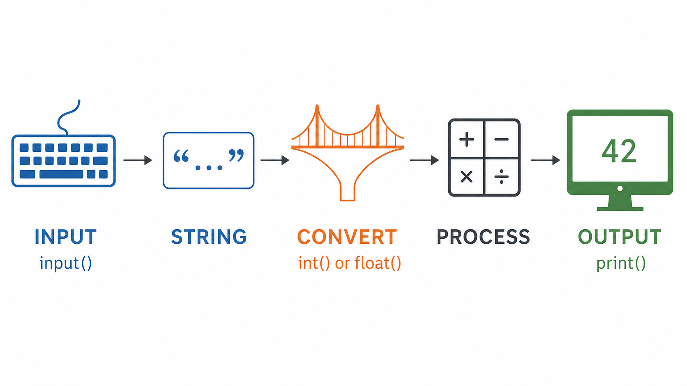
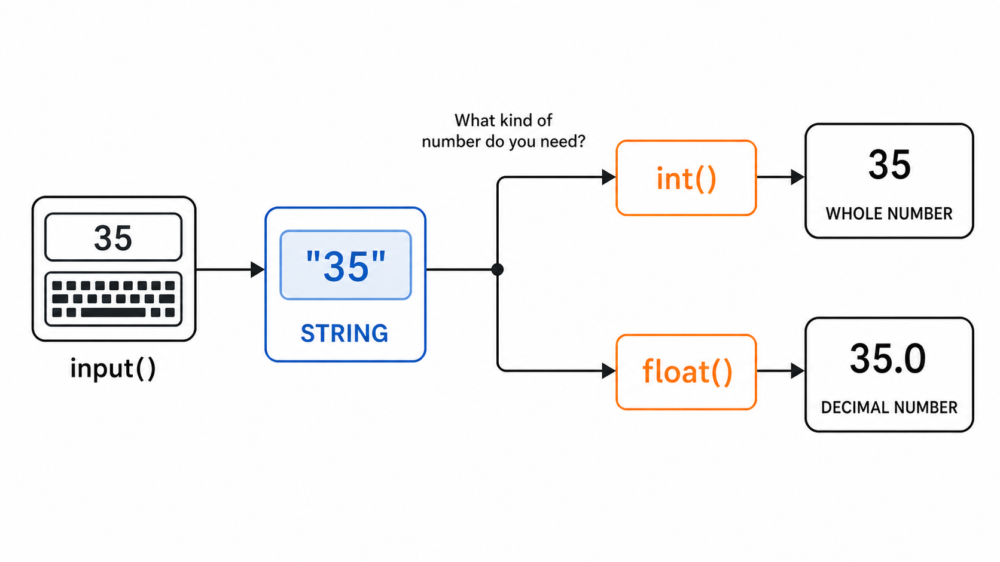
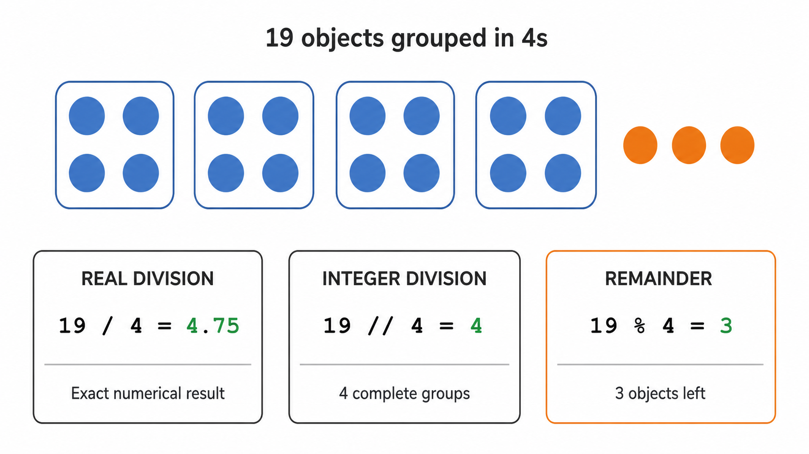
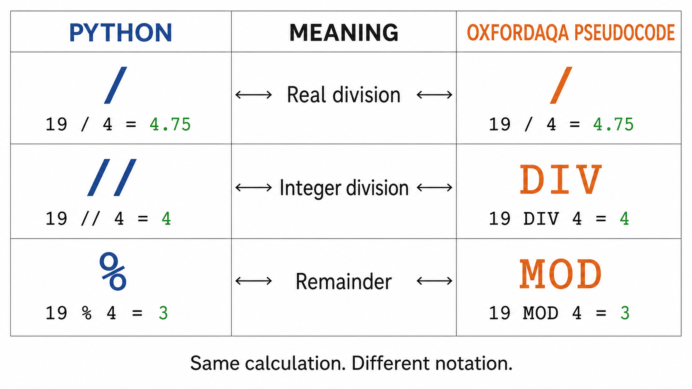
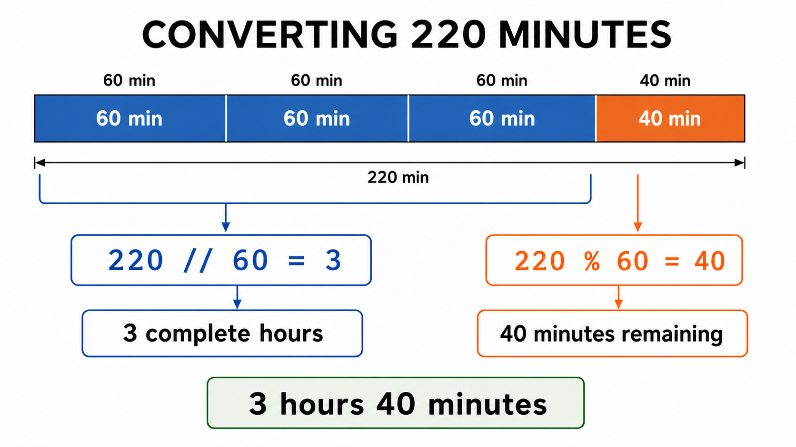

Turn keyboard input into usable numerical data, choose the correct arithmetic operator and prove your program works in your own Python IDE.
60 minutesAO1 · AO2 · AO3Paper 1 + Paper 2Own Python IDEComplete PDF evidence
W02S03 · Input & arithmeticStudent · Class
Starter · Page 1 of 50% complete
Saved on this device
Teacher preview is active. Preview responses are stored separately.
Objective, WAGBA and Knowledge · Skills · Understanding
Objective: Create, run and explain a Python program that accepts, converts and processes input.
WAGBA: Converting user input into usable data and selecting the correct arithmetic operator.
K: input, output, conversion and operators. S: predict, write, test and debug. U: data type and operator choices depend on the problem.
Before Do Now · Read, follow, then predict
How does Python use what we type?
A school club needs to collect a name and a number of tickets. Follow these small examples before trying the starter. You do not need to run code yet.
About 4 minutes, then 4 minutes for Do Now. Take longer or ask for one smaller step if needed.
1. Input is data entering a program
“Input” means the data values that are entered when the program is running.
Short textbook extract: OxfordAQA Computer Science Student Book, “Input”, printed p8 (PDF p12). The explanations and examples below are teacher-written, not textbook quotations.
In Python, input() displays a prompt (a message telling the user what to enter), waits for typing, and returns the text when the user presses Enter.
2. Give the input a meaningful name
club_member = input("Enter your name: ")
input("Enter your name: ") collects the reply. The paired quotes surround the prompt; the parentheses ( ) enclose what we pass to the function.
= assigns that reply to club_member, the variable’s identifier (name).
If the user types Maya, the stored value is the string "Maya", not the prompt. The user does not type the quotes.
3. Convert text before numerical arithmetic
input() returns a string (str), even when someone types digits. Read this example from top to bottom. Here the user types 4.
tickets_text = input("How many tickets? ")
tickets = int(tickets_text)
total_tickets = tickets + 2
print("Tickets including two guests:", total_tickets)
Line 1:tickets_text stores "4", a string.
Line 2:int() converts that text to the integer 4, assigned to tickets.
Line 3:+ adds two numbers: 4 + 2 gives 6.
Line 4:print() displays Tickets including two guests: 6.
Choose int() for a whole-number count; choose float() for a value that may have a decimal part, such as float("2.50"). Names stay as strings.
How to inspect a type:print(type(tickets_text)) displays <class 'str'>. For tickets, it displays <class 'int'>.
4. An error gives you a clue
"4" + 2 raises a TypeError: Python cannot add a string and an integer. Convert suitable number text before adding. "4" + "2" joins text to make "42"; it does not add the numbers.
Optional help: other errors you may meet
SyntaxError: check missing closing quotes or parentheses.
NameError: check spelling and whether you assigned the name before using it. Python distinguishes print from Print.
ValueError:int("four") and int("4.5") cannot convert that text to an integer. float("4.5") accepts the decimal text.
Read the error name and line number, change one thing, then try again in your IDE. You do not need to memorise all the errors now.
Further reading: “Input”, printed pp8–9 (PDF pp12–13), and “Convert data type”, printed pp18–19 (PDF pp22–23). Python behaviour checked against the official function reference and error guide. These links are optional.
Now apply it: the starter asks about an age instead of tickets. Follow each line, track its value and type, and identify where a calculation goes wrong. You can return to this reading at any time.
Starter · Diagnose before running · AO1/AO2
Do Now: use what you have just read
A club asks a student’s age in completed years and tries to calculate their age next year. The user types 15 and presses Enter. Read the three lines in order and predict before running. You may look back at the reading or ask for help.
About 4 minutes · not a timed test
Do Now: five quick questions
age = input("Enter your age: ")
print(type(age))
next_age = age + 1
Write the value. Use quotation marks if it is text.
Write the type name, such as a Python name or its English term. You do not need the full <class ...> display.
Count from the top: 1, 2, 3. Write one line number.
Name the two data types being combined. One sentence is enough.
Choose one function and explain why it suits the value needed in this scenario.
Check after answering
If the user types 15, input() stores the string "15". The final line attempts to add a string and an integer, causing a type error. int() is suitable because age in years is being treated as a whole number.

Visual 1 · A numerical program still receives keyboard input as text first. Select to enlarge.
Today’s objectiveCreate, run and explain a Python program that accepts user input, converts it into a suitable data type, performs arithmetic and displays clearly labelled output.
Paper 1Write, run, test and repair Python programs in your own IDE.
Paper 2Predict results and explain input, output, conversion and arithmetic operators.
After Do Now · About 3 minutes
What am I getting better at?
Look back at your five starter answers. Which ideas did you already know, and which needed the reading or a prompt? Choose a starting point for each statement below, then choose one focus for today.
Knowledge: facts I can recall. Skills: things I can do. Understanding: reasons I can explain and apply. You can work on all three; these are not fixed types of learner.
Our WAGBA: converting user input into usable data and selecting the correct arithmetic operator to produce accurate output.
The starter did not assess everything, especially division and practical testing. Choose “Not sure / not checked yet” if you have no evidence. A fact you already know does not need to be your main improvement target.
Your learning focus overview
For example: “I knew input() gives a string, but I needed the reading to explain why age + 1 fails.” A short sentence or a note of your discussion with your teacher is enough.
These checks are self-reports, not marks. You can continue when unsure and discuss your focus with your teacher.
Main Activity 1 · Read, diagnose and repair · AO1/AO2/AO3
Turn text input into numerical data
Read the teaching notes and worked example before repairing the delivery-cost program in your own IDE.
Target: 18 minutes
OxfordAQA Student BookPrinted p4, pp8–9 and pp18–19PDF pp8, 12–13 and 22–23Specification 3.2.7
Reading: input, output and conversion
input() pauses a program and collects characters typed using the keyboard. Python initially stores those characters as a string, even when they look like a number. A string can be displayed, but it cannot be used directly in numerical arithmetic.
Use int() when the program needs a whole number. Use float() when the value may contain a decimal part. print() displays output; a useful program labels its output so the user knows what the result means.
The conversion can happen on a separate line, or around the input statement: item_cost = float(input("Enter the item cost: ")).

Visual 2 · Choose the conversion according to the kind of number the program needs.
Visual 3 · Conversion makes both values numerical before addition.
Part B: run, repair and test
Copy the broken program into your own Python IDE and run it with 35.
Record the error message in your own words.
Repair the program using float().
Test it with 35 and 19.99.
Paste your final code and add one complete IDE screenshot.
Add your IDE evidence
Paste, drag or choose a complete screenshot showing the code and a successful run.
Main Activity 2 · Apply operators in Python and pseudocode · AO1/AO2/AO3
Complete groups or exact division?
Learn the three division operators, then build and test a minutes-to-hours converter in your own IDE.
Target: 22 minutes
OxfordAQA Student BookPrinted pp14–15 and pp20–21PDF pp18–19 and pp24–25Specification 3.2.3 and 3.2.7
Reading: three different division results
Real division / calculates the full numerical result, including a decimal part when needed. Integer division // returns the number of complete groups. The remainder operator % returns the amount left over.
OxfordAQA pseudocode uses DIV for integer division and MOD for remainder. Python uses // and %. The notation changes, but the calculation and meaning stay the same.
Worked example: where does the remainder 3 come from?
There are 19 students. Each complete team needs 4 students. How many complete teams can we make, and how many students are left without a team? Use long division, stopping at a whole-number answer.
4419−163
19 ÷ 4 = 4 remainder 3 4 complete teams; 3 students left over.
Divide: 4 fits into 19 four whole times. Write 4 above the bar. This is the whole-number quotient.
Multiply: 4 × 4 = 16. Write 16 underneath 19. Four complete teams use 16 students.
Subtract: 19 − 16 = 3. Write 3 underneath the subtraction line. These are the students left over: the remainder.
Check: 3 is less than 4, so there are not enough students for another complete team. Also, 4 × 4 + 3 = 19.
Now connect the same calculation to Python
19 // 4 gives 4 — the whole-number answer above the bar.
19 % 4 gives 3 — the remainder below the subtraction line.
19 / 4 gives 4.75 — the decimal answer if you continue dividing.
Why 4.75, not 4.3? The 3 left over is 3 out of the 4 needed for another group. That fraction is 3 ÷ 4 = 0.75. So 4 remainder 3 means 4 + 0.75, not 4.3.
Next, use this same thinking with minutes: a complete hour needs 60 minutes. Use // to count complete hours and % to find the minutes left over.

Visual 4 · Real division, complete groups and what remains answer different questions.

Visual 5 · Recognise both Python and OxfordAQA pseudocode notation.
Operator check
/Real divisionExact numerical result
//Integer divisionComplete groups
%RemainderAmount left over

Visual 6 · Model the problem before reading the program.
Part A: inspect and predict
MINUTES_PER_HOUR = 60
total_minutes = int(input("Enter the number of minutes: "))
whole_hours = total_minutes // MINUTES_PER_HOUR
minutes_remaining = total_minutes % MINUTES_PER_HOUR
print("Whole hours:", whole_hours)
print("Minutes remaining:", minutes_remaining)
Part B: run four deliberate tests
Copy the program into your own Python IDE.
Run each test below and record the actual output.
If a result differs from the expected output, inspect your conversion and operators.
Paste your final code and add a screenshot showing at least one successful run.
InputExpected outputYour actual output
2203 hours, 40 minutes
601 hour, 0 minutes
590 hours, 59 minutes
00 hours, 0 minutes
Add your converter evidence
Paste, drag or choose a complete IDE screenshot. It will retain its full aspect ratio in the PDF.
Quick challenge if time remainsAdapt the same structure to convert a total number of seconds into complete minutes and remaining seconds.
Extension · Early finisher practice · AO1/AO2/AO3
Ten small scenario-based challenges
Complete as many as time allows. Follow the same cycle each time: understand → predict → code → run → test → improve.
Scope reminderUse input, output, variables, constants, conversion and arithmetic. Selection and loops are not required.
Extension reflection and evidence
Add extension screenshots
Paste, drag or choose one or more complete IDE screenshots.
After extension · Before plenary · About 3 minutes
Where am I now?
Look at your answers, your Python output and any tests you completed. Revisit the same six checks. You can reflect on the main activities even if you did not attempt an extension.
New learning — a good struggle
This is new and takes effort, but I am making progress with examples or a little support.
Consolidating
I am practising what I know and becoming more secure.
Treading water
This feels easy and is not stretching me. I need a deeper explanation or a new scenario.
Drowning — I need help
I feel stuck or overwhelmed. I can pause and ask for a smaller, guided next step.
Choose a stage for each statement. Use “Not attempted yet” where needed. You might be consolidating conversion but need help with remainder: there is no single overall stage or score.
Your K/S/U review
For example: “My test with 59 minutes gave 0 hours and 59 minutes. Next I will explain why both operators are needed.” Or: “I cannot follow the conversion line yet. Please work through it with me.”
Need help now? Pause and tell your teacher or show them your selected statement. Saving here does not send an alert. These are feelings about this task, not grades or permanent labels.
Plenary · Independent exit ticket · AO1/AO2
Explain every stage
Answer without running the code. Then export every answer, code sample and evidence image as one PDF.
Target: 6 minutes
Exit code
number_text = input("Enter a number: ")
number = int(number_text)
groups = number // 4
left_over = number % 4
print(groups)
print(left_over)
Assume that the user enters 19.
WAGBA and exam reflection
Export your complete lesson evidence
The report includes your profile, every response, all pasted code and each evidence image—even from sections you did not finish.
W02S03_Firstname_Class.pdf
Select Export complete PDF.
In the print window choose Save as PDF.
Use the suggested filename and open the saved PDF to check every page.
Open the correct Microsoft Teams assignment.
Select Add work → Upload from this device.
Select the PDF, check that it has attached, then select Turn in.
Reading is adapted and paraphrased from the OxfordAQA International GCSE Computer Science Student Book, printed pages 4, 8–9, 14–15 and 18–21, and aligned to OxfordAQA 9210 specification sections 3.2.3 and 3.2.7.